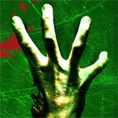
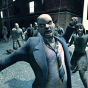

Left 4 Dead
12 November 2008
The demo for Left 4 Dead came out a couple days and I immediately downloaded it on steam. I've been looking forward to playing this game since forever. I'm a hugeeee fan of coop shooting games. Now a zombie coop shooter? Freaking sweet!
The best way to describe Left 4 Dead is:
+
+
=
Even though the demo was only two stages, Georo and I played it for 3 hours straight. Man it is so fun, especially if you have voice chat. "OHHHH SHITT OH SHITT FUCKING HELP MEE!!! HOLY CRAP SHOOT THAT CRAP!!!!! WTF!! RUSHHHH HEALLL MEEEE!!!111!!!1!". Intense. We just kept playing the stages over and over on varying difficulties.
There's a lot of replay value because each time you play, the zombies are never in the same place. Instead of static spawn points, the AI in Left 4 Dead is controlled by "the Director" who dynamically places enemies and items based on the players' situation. Each time you play, the stage is completely different.
They stress the CO-OP. Shit, if you wandered off, you will probably get owned by hordes of infected or one of the specialty type infected. There are a bunch of them with all different abilities. You really need to work together and be in the same room playing or have voice chat so you can scream profanities at each other. Fun factor increases tenfold.
{kind=link}
You guys need to download this crap and play with us. And when it comes out you guys need to buy this crap and play with us. All your base are belong to us.